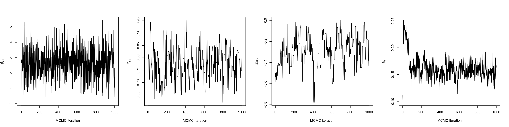
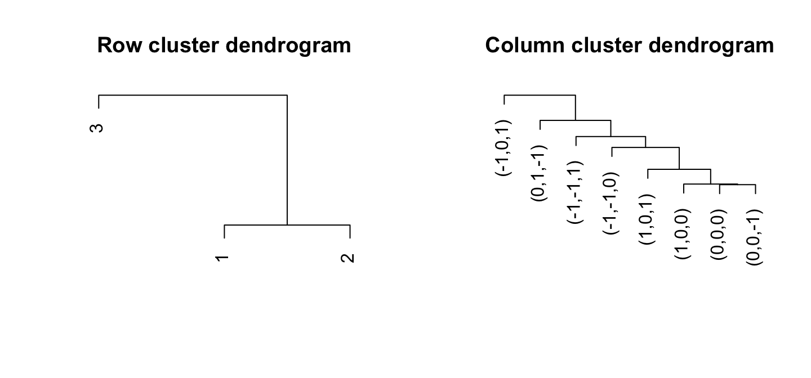
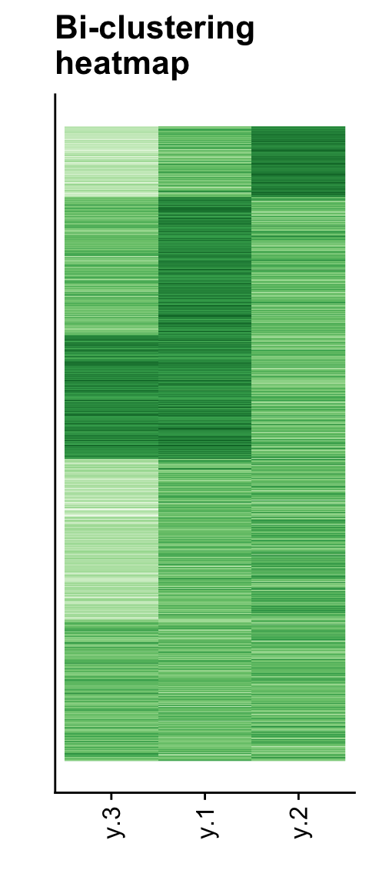
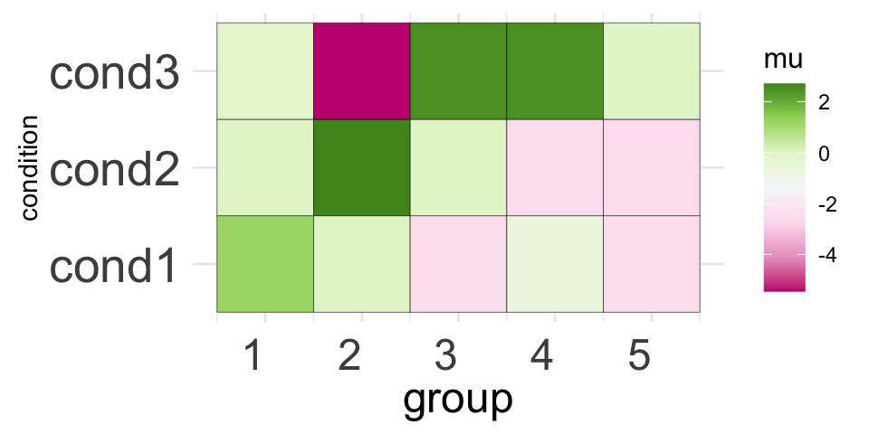
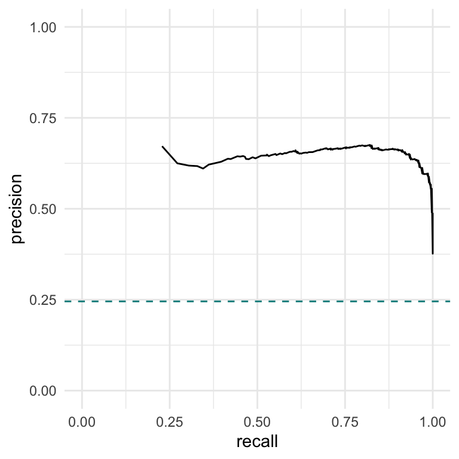

Last updated: 2024-10-30
Checks: 7 0
Knit directory: climb-jin/
This reproducible R Markdown analysis was created with workflowr (version 1.7.1). The Checks tab describes the reproducibility checks that were applied when the results were created. The Past versions tab lists the development history.
Great! Since the R Markdown file has been committed to the Git repository, you know the exact version of the code that produced these results.
Great job! The global environment was empty. Objects defined in the global environment can affect the analysis in your R Markdown file in unknown ways. For reproduciblity it’s best to always run the code in an empty environment.
The command set.seed(20241028) was run prior to running
the code in the R Markdown file. Setting a seed ensures that any results
that rely on randomness, e.g. subsampling or permutations, are
reproducible.
Great job! Recording the operating system, R version, and package versions is critical for reproducibility.
Nice! There were no cached chunks for this analysis, so you can be confident that you successfully produced the results during this run.
Great job! Using relative paths to the files within your workflowr project makes it easier to run your code on other machines.
Great! You are using Git for version control. Tracking code development and connecting the code version to the results is critical for reproducibility.
The results in this page were generated with repository version 4b37710. See the Past versions tab to see a history of the changes made to the R Markdown and HTML files.
Note that you need to be careful to ensure that all relevant files for
the analysis have been committed to Git prior to generating the results
(you can use wflow_publish or
wflow_git_commit). workflowr only checks the R Markdown
file, but you know if there are other scripts or data files that it
depends on. Below is the status of the Git repository when the results
were generated:
Ignored files:
Ignored: .Trash/
Ignored: .android/
Ignored: Desktop/climb-jin/.DS_Store
Ignored: Desktop/climb-jin/analysis/.DS_Store
Ignored: Desktop/climb-jin/analysis/pairwise_fitting_cache/
Ignored: env_name/
Ignored: lemon-x.y.z/
Untracked files:
Untracked: .CFUserTextEncoding
Untracked: .DS_Store
Untracked: .RData
Untracked: .RDataTmp
Untracked: .Rapp.history
Untracked: .Rhistory
Untracked: .Xauthority
Untracked: .anaconda/
Untracked: .anyconnect
Untracked: .bash_history
Untracked: .bash_profile
Untracked: .bash_profile.bak
Untracked: .bash_sessions/
Untracked: .cache/
Untracked: .cisco/
Untracked: .conda/
Untracked: .condarc
Untracked: .config/
Untracked: .continuum/
Untracked: .cups/
Untracked: .dropbox/
Untracked: .eclipse/
Untracked: .gitconfig
Untracked: .ipynb_checkpoints/
Untracked: .ipython/
Untracked: .julia/
Untracked: .juliaup/
Untracked: .jupyter/
Untracked: .local/
Untracked: .matplotlib/
Untracked: .oracle_jre_usage/
Untracked: .p2/
Untracked: .r/
Untracked: .snipaste/
Untracked: .subversion/
Untracked: .tcshrc
Untracked: .tooling/
Untracked: .virtualenvs/
Untracked: .vscode/
Untracked: .wns/
Untracked: .xonshrc
Untracked: .zsh_history
Untracked: .zsh_sessions/
Untracked: .zshrc
Untracked: 511hw3.Rmd
Untracked: =0.29.21
Untracked: =0.4.0
Untracked: Applications/
Untracked: CLIMB.zip
Untracked: Calibre Library/
Untracked: Creative Cloud Files Personal Account lydia0425@hotmail.com 3BE21D79656B7BC80A495F8C@AdobeID/
Untracked: Creative Cloud Files lydiajin@colostate.edu 5a37fd827490aa859a1a523ab35d0252fdf8d2d8259bfef57b7d4de857d68da6/
Untracked: Desktop/.DS_Store
Untracked: Desktop/319.pdf
Untracked: Desktop/517/
Untracked: Desktop/555/
Untracked: Desktop/7788/
Untracked: Desktop/CLIMB/
Untracked: Desktop/File/
Untracked: Desktop/Screenshot 2024-10-25 at 09.41.56.png
Untracked: Desktop/Screenshot 2024-10-25 at 09.43.11.png
Untracked: Desktop/Screenshot 2024-10-25 at 09.43.48.png
Untracked: Desktop/Screenshot 2024-10-29 at 10.47.50.png
Untracked: Desktop/climb-jin/.Rprofile
Untracked: Desktop/climb-jin/.gitattributes
Untracked: Desktop/climb-jin/.gitignore
Untracked: Desktop/climb-jin/README.md
Untracked: Desktop/climb-jin/_workflowr.yml
Untracked: Desktop/climb-jin/analysis/about.Rmd
Untracked: Desktop/climb-jin/analysis/candidate_latent_classes.Rmd
Untracked: Desktop/climb-jin/analysis/license.Rmd
Untracked: Desktop/climb-jin/climb-jin.Rproj
Untracked: Desktop/climb-jin/code/
Untracked: Desktop/climb-jin/data/
Untracked: Desktop/climb-jin/output/
Untracked: Desktop/climb-jin/pwfits.Rdata
Untracked: Desktop/climb-page/
Untracked: Desktop/reading/
Untracked: Documents
Untracked: Downloads
Untracked: Dropbox/
Untracked: HW5code.Rmd
Untracked: HW5code.pdf
Untracked: HW6-code.Rmd
Untracked: HW6-code.pdf
Untracked: IdeaProjects/
Untracked: Library/
Untracked: MATLAB-Drive/
Untracked: Manifest.toml
Untracked: Movies/
Untracked: Music/
Untracked: Pictures/
Untracked: Project.toml
Untracked: Public/
Untracked: PycharmProjects/
Untracked: Sigma_chain_py.jld
Untracked: Sigma_chain_test.jld
Untracked: Sigma_chains_
Untracked: Sigma_chains_1
Untracked: Sigma_chains_1.csv
Untracked: Sigma_chains_10
Untracked: Sigma_chains_10.csv
Untracked: Sigma_chains_11
Untracked: Sigma_chains_11.csv
Untracked: Sigma_chains_12
Untracked: Sigma_chains_12.csv
Untracked: Sigma_chains_13
Untracked: Sigma_chains_13.csv
Untracked: Sigma_chains_2
Untracked: Sigma_chains_2.csv
Untracked: Sigma_chains_21.txt
Untracked: Sigma_chains_3
Untracked: Sigma_chains_3.csv
Untracked: Sigma_chains_4
Untracked: Sigma_chains_4.csv
Untracked: Sigma_chains_423.txt
Untracked: Sigma_chains_5
Untracked: Sigma_chains_5.csv
Untracked: Sigma_chains_6
Untracked: Sigma_chains_6.csv
Untracked: Sigma_chains_7
Untracked: Sigma_chains_7.csv
Untracked: Sigma_chains_8
Untracked: Sigma_chains_8.csv
Untracked: Sigma_chains_9
Untracked: Sigma_chains_9.csv
Untracked: Sigma_chains_reshaped.txt
Untracked: Sigma_mvn_test.csv
Untracked: Sigma_star.csv
Untracked: Sigma_star_test.csv
Untracked: Sigma_star_test_logl.csv
Untracked: Sigma_test.csv
Untracked: Sites/
Untracked: Untitld.Rmd
Untracked: Untitld.docx
Untracked: Untitled.Rmd
Untracked: Untitled.log
Untracked: Untitled.tex
Untracked: XFeat_training_example.ipynb
Untracked: accelerated_features/
Untracked: acpt_rate_chain.txt
Untracked: anaconda3/
Untracked: cgibbs.ipynb
Untracked: chain.csv
Untracked: chain_test.jld
Untracked: climb-page/
Untracked: constrained_distributions.ipynb
Untracked: consulting.Rmd
Untracked: curr_Sigmas_test.csv
Untracked: eclipse-workspace/
Untracked: eclipse/
Untracked: h_mvn_test.csv
Untracked: helpers.ipynb
Untracked: hyp.RData
Untracked: hyp.csv
Untracked: hyp.rds
Untracked: hyp_Psi0.RData
Untracked: hyp_alpha.RData
Untracked: hyp_kappa0.RData
Untracked: hyp_mu0.RData
Untracked: iCloud Drive (Archive)/
Untracked: image-matching-webui/
Untracked: julia/
Untracked: labels.RData
Untracked: labels_test.csv
Untracked: lgf.txt
Untracked: lgf1.txt
Untracked: lgf2.txt
Untracked: lgf_human.txt
Untracked: lgf_human1.txt
Untracked: lgf_human2.txt
Untracked: ll_mult_curr.csv
Untracked: ll_mult_star.csv
Untracked: matlab_crash_dump.14732-1
Untracked: matlab_crash_dump.17960-1
Untracked: matlab_crash_dump.33550-1
Untracked: matlab_crash_dump.411-1
Untracked: miniconda3/
Untracked: minimal_example.ipynb
Untracked: mosta.ipynb
Untracked: mu0_mvn_test.csv
Untracked: mu0_test.csv
Untracked: mu_chain_py.jld
Untracked: mu_chain_test.csv
Untracked: mu_chain_test.jld
Untracked: mu_chains.csv
Untracked: mu_chains.txt
Untracked: mu_chains_1.csv
Untracked: mu_chains_10.csv
Untracked: mu_chains_11.csv
Untracked: mu_chains_12.csv
Untracked: mu_chains_13.csv
Untracked: mu_chains_2.csv
Untracked: mu_chains_3.csv
Untracked: mu_chains_3.txt
Untracked: mu_chains_4.csv
Untracked: mu_chains_5.csv
Untracked: mu_chains_6.csv
Untracked: mu_chains_7.csv
Untracked: mu_chains_8.csv
Untracked: mu_chains_9.csv
Untracked: mu_chains_reshaped.txt
Untracked: mu_hats_test.csv
Untracked: occ.csv
Untracked: opt/
Untracked: out.csv
Untracked: plotters.ipynb
Untracked: prob_curr.csv
Untracked: prob_star.csv
Untracked: processors.ipynb
Untracked: prop_chain
Untracked: prop_chain.csv
Untracked: prop_chain.txt
Untracked: prop_chain_py.csv
Untracked: pwfits.Rdata
Untracked: retained_classes.RData
Untracked: run_mcmc.ipynb
Untracked: run_mcmc_pre.ipynb
Untracked: running_mcmc-Copy1.ipynb
Untracked: running_mcmc.ipynb
Untracked: running_mcmc_Aug6.ipynb
Untracked: running_mcmc_Sep2-Copy1.ipynb
Untracked: running_mcmc_Sep2.ipynb
Untracked: sim.RData
Untracked: simdat.RData
Untracked: xfeat+lg_torch_hub.ipynb
Untracked: xfeat_matching.ipynb
Untracked: xfeat_torch_hub.ipynb
Untracked: z_chain
Untracked: z_chain.csv
Untracked: z_chain.txt
Untracked: z_chain_py.csv
Untracked: z_test
Untracked: z_test.csv
Untracked: z_test_logl.csv
Untracked: zout_test.csv
Unstaged changes:
Modified: Desktop/climb-jin/analysis/running_mcmc.Rmd
Note that any generated files, e.g. HTML, png, CSS, etc., are not included in this status report because it is ok for generated content to have uncommitted changes.
These are the previous versions of the repository in which changes were
made to the R Markdown
(Desktop/climb-jin/analysis/downstream.Rmd) and HTML
(Desktop/climb-jin/docs/downstream.html) files. If you’ve
configured a remote Git repository (see ?wflow_git_remote),
click on the hyperlinks in the table below to view the files as they
were in that past version.
| File | Version | Author | Date | Message |
|---|---|---|---|---|
| Rmd | 4b37710 | Jin Peng | 2024-10-30 | Add downstream |
CLIMB’s output is nothing but the posterior MCMC samples of the parameters of the normal mixture (means, variance-covariance matrices, mixing weights, and cluster assignments). These samples can be used for clustering/classification, visualizations, and statistical inference. While there are many downstream analyses one could do with such output, here, we demonstrate implementations of several of the analyses used in the CLIMB manuscript.
First, let’s load in the MCMC we briefly ran on simulated data in the running the MCMC section.
Attaching package: 'dplyr'The following objects are masked from 'package:stats':
filter, lagThe following objects are masked from 'package:base':
intersect, setdiff, setequal, unionchain <- readRDS("output/chain.rds")The first thing we should do make some trace plots for some of the parameters being estimated. This will help us decide when the chain has entered its stationary distribution. Here, we make plots of a mean, variance, covariance, and mixing weight.
# The mean in the first dimension of the third cluster
mu31 <- chain$mu_chains[[3]][,1]
# The variance of the first dimension of the second cluster
sigma21 <- chain$Sigma_chains[[2]][1,1,]
# The covariance between dimensions 2 and 3 in the fourth cluster
sigma423 <- chain$Sigma_chains[[4]][2,3,]
# The mixing weight of the seventh cluster
pi7 <- chain$prop_chain[,7]
Looking at a few of these trace plots reveals that the chain achieves stationary around 200 iterations in. Therefore, we discard the first 200 iterations as burn-in, and do our analyses on the remaining 800.
burnin <- 1:200CLIMB can provide a bi-clustering of analyzed data. Row clusters come from the estimated latent classes, of course, though these classes can even be grouped by their similarity.
CLIMB uses a distance based on class covariances to cluster the
dimensions (columns). The function
compute_distances_between_conditions will compute these
pairwise distances between conditions based on model fit. This was used
in the CLIMB manuscript to determine the relationship among
hematopoietic cell populations based on CTCF binding patterns.
CLIMB’s estimated classes naturally cluster the rows. However, the
function compute_distances_between_clusters will compute
distances between estimated clusters as well. This distance is based on
a symmetrified theoretical Kullback-Liebler divergence.
par(mfrow = c(1,2))
# The figure isn't as exciting with simulated data
col_distmat <- compute_distances_between_conditions(chain, burnin)
hc_col <- hclust(as.dist(col_distmat), method = "complete")
plot(hc_col, xlab = "", ylab= "", axes = FALSE, sub = "", main = "Row cluster dendrogram")
row_distmat <- compute_distances_between_clusters(chain, burnin)
hc_row <- hclust(as.dist(row_distmat), method = "complete")
plot(hc_row, xlab = "", ylab= "", axes = FALSE, sub = "", main = "Column cluster dendrogram")
These figures aren’t very thrilling on their own, but we can use them
to make some nice heatmaps. CLIMB provides the function
get_row_reordering to facilitate plotting the
bi-clustering:
# Load back in the data
data("sim")
dat <- sim$data
# Get a row reordering for plotting
row_reordering <- get_row_reordering(dat = dat, row_clustering = hc_row, chain = chain, burnin = burnin)
# Melt (for ggplot2)
molten1 <-
dplyr::mutate(dat, "row" = row_reordering) %>%
tidyr::pivot_longer(cols=!row, names_to = "variable")
# Rename the factor levels to match the dimensions
levels(molten1$variable) <- as.factor(paste(1:3))
# Plot the bi-clustering heatmap, like in the CLIMB manuscript
p1 <- ggplot(data = molten1,
aes(x = forcats::fct_relevel(variable, ~ .x[hc_col$order]), # Relevel factors, for column sorting on the plot
y = row, fill = value)) +
geom_raster() +
cowplot::theme_cowplot() +
theme(legend.position = "none", axis.ticks.y = element_blank(), axis.text.y = element_blank()) +
xlab("") + ylab("") +
theme(axis.text.x = element_text(angle = 90, hjust = 1, vjust = .5)) +
ggtitle("Bi-clustering\nheatmap") +
scale_fill_gradientn(colours=RColorBrewer::brewer.pal(9,"Greens"))
print(p1)
CLIMB allows you to merge similar groups for the sake of
visualization, for examble on the Genome Browser. In the CLIMB
manuscript, we merged clusters of CTCF binding patterns to color peaks
more in a more parsimonious set of 5 groups on the genome browser. We
show how to do this for an arbitrary number of groups with CLIMB’s
merge_classes function.
The output of a merge_classes call provides the means
and mixing weights of the new parent groups. These means and weights are
aggregated from each groups constituent classes. merged_z
gives the new group assignments for each observations.
The clustering obect is simply a call to
stats::hclust().
# Merge into 5 parent groups
merged <- merge_classes(n_groups = 5, chain = chain, burnin = burnin)
# Check the structure of the merging
str(merged)List of 6
$ merged_z : int [1:1500] 5 1 1 1 1 1 1 1 1 1 ...
$ merged_mu : num [1:5, 1:3] 1.19 0 -2.527 -0.632 -2.555 ...
$ merged_sigma: num [1:3, 1:3, 1:5] 0.8853 0 0.0951 0 1 ...
$ merged_prop : num [1:5] 0.5797 0.0734 0.1255 0.1043 0.1172
$ clustering :List of 7
..$ merge : int [1:7, 1:2] -4 -2 -1 -7 -8 -3 -6 -5 1 2 ...
..$ height : num [1:7] 0.0113 0.022 0.3977 0.7957 0.9305 ...
..$ order : int [1:8] 6 3 8 7 1 2 4 5
..$ labels : chr [1:8] "1" "2" "4" "6" ...
..$ method : chr "average"
..$ call : language hclust(d = as.dist(cluster_dist), method = method)
..$ dist.method: NULL
..- attr(*, "class")= chr "hclust"
$ distmat : num [1:8, 1:8] 0 0.366 1.638 0.439 0.389 ...
..- attr(*, "dimnames")=List of 2
.. ..$ : chr [1:8] "1" "2" "4" "6" ...
.. ..$ : chr [1:8] "1" "2" "4" "6" ...We can visualize the salient features of the new groups with a simple visualization of the merged group means:
# For the plot color palette
library(RColorBrewer)
# Melt for plotting
molten2 <-
merged$merged_mu %>%
`colnames<-` (paste0("cond", 1:3)) %>%
as.data.frame() %>%
dplyr::mutate(group = 1:n()) %>%
tidyr::pivot_longer(cols = !group, names_to = "condition", values_to = "mu")
p2 <- ggplot(data = molten2, aes(group, condition, fill = mu)) +
geom_tile(color = "black") +
scale_fill_distiller(palette = "PiYG", direction = 1) +
coord_fixed() +
theme_minimal() +
theme(axis.text.x = element_text(angle = 0, vjust = 0.5, hjust = 1, size = 18),
axis.text.y = element_text(size = 20),
axis.title.x = element_text(size = 18),
axis.ticks.y = element_blank(),
axis.ticks.x = element_blank(),
legend.title = element_text(size = 12))
print(p2)
In the CLIMB manuscript, we introduce a statistical test for consistency of signals based on the partial conjunction hypothesis:
\[\begin{equation} \begin{aligned} \mathcal{H}_0^{u/D} &:= \text{less than }u\text{ out of }D\text{ instances of the observed effect are non-null, versus }\\ \mathcal{H}_1^{u/D} &:= \text{at least }u\text{ out of }D\text{ instances of the observed effect are non-null} \end{aligned} \end{equation}\]
where \(u\) is some user-defined consistency threshold, and \(D\) is the dimension of the data. This hypothesis is texting using some combination of the following quantites:
\[\begin{align} &P^{u/D+}:=\sum_{m=1}^M \text{Pr}(\mathbf{x}_i\in h_m \mid \mathbf{x}) \cdot \mathbf{1} \big[ \sum_{d=1}^D \mathbf{1} (h_{[d]}^m=1) \geq u\big] \tag{a}\\ &P^{u/D0} := \sum_{m=1}^M \text{Pr}(\mathbf{x}_i\in h_m \mid \mathbf{x})\cdot\mathbf{1}\big[\sum_{d=1}^D\mathbf{1}(h_{[d]}^m=0) \geq u\big] \tag{b} \\ &P^{u/D-}:=\sum_{m=1}^M \text{Pr}(\mathbf{x}_i\in h_m \mid \mathbf{x})\cdot\mathbf{1}\big[\sum_{d=1}^D\mathbf{1}(h_{[d]}^m=-1) \geq u\big] \tag{c} \\ &P^{u/D}:=\sum_{m=1}^M \text{Pr}(\mathbf{x}_i\in h_m \mid \mathbf{x})\cdot\mathbf{1}\big[\sum_{d=1}^D\mathbf{1}(h_{[d]}^m \neq 0) \geq u\big] \tag{d} \end{align}\]
Which quantities you use depends on what you want to test. If you want to test whether some signals are replicated, and you care about the sign of the signals, you would employ a replicability test with quantities (a) and (c). If you wanted to do the same test, but you are agnostic to the sign of the signal, you would employ quantity (d) instead. If you wanted to test for consistent behavior (e.g., what is done in the CLIMB manuscript for differential gene expression along a lineage), you would employ a test using quantites (a), (b), and (c).
This is all implemented in the CLIMB function
test_consistency. Test consistency takes 6 arguments.
chain: the output of extract_chains()burnin: a vector of iterations (indices) to be used as
burn-inu: the consistency threshold, which is an integer in
\(2\ldots D\)b: the confidence level in (0,1), corresponding the
posterior probability that an observation rejects the null
hypothesis. Here, a natural threshold is 0.5, though larger,
more stringent thresholds could be applied.with_zero: Set this equal to TRUE to
implement the test for consistency across all dimensions, as in the
CLIMB manuscript when testing for differentially expressed genes.agnostic_to_sign: Set equal to TRUE if you
do not care if a signal is in the positive or negative directions.This function will return a boolean vector with \(n\) elements (\(n\) being the sample size). If returns
TRUE when the null is rejected.
So, for example, we can test for which simulated observations are “consistently expressed” across all 3 dimensions as follows:
non_differential <- test_consistency(chain, burnin, with_zero = TRUE)
head(non_differential)[1] FALSE FALSE FALSE TRUE FALSE FALSEHere, TRUE sits at the indices of observations who are
likely to be consistent across all 3 dimensions.
Alternatively, we could test for observations which show a consistent signal (i.e., a -1 or a 1) in at least 2 out of the 3 dimensions. Let’s do this, and also make a precision-recall curve displaying the results. To make a precision-recall curve, we first need to know the underlying truth of the simulation.
#-------------------------------------------------------------------------------
# First, obtain the truth
# Load in true association patterns
data("true_association")
# Consistency threshold
u <- 2
# Which indices correspond to consistent signals at threshold u = 2?
consistent_pos_lab_idx <- apply(true_assoc, 1, function(X) sum(X == 1) >= u)
consistent_neg_lab_idx <- apply(true_assoc, 1, function(X) sum(X == -1) >= u)
consistent_lab_idx <-
sort(unique(c(
which(consistent_neg_lab_idx),
which(consistent_pos_lab_idx)
)))
# These are the labels corresponding to consistent behavior
consistent_lab_idx[1] 3 8Now, we can compute precision and recall across a range of
b in (0,1).
b_grid <- seq(0, 1, length.out = 1000)
replicable <- test_consistency(chain, burnin, u = 2, b = b_grid)
# Which observations are the replicable ones
rep_idx <- sim$cluster %in% consistent_lab_idx
# Total number of positives in the dataset
P <- sum(rep_idx)
# True positives
TP <- map(replicable, ~ .x & rep_idx)
# False positives
FP <- map(replicable, ~ .x & !rep_idx)
# True positive rate aka recall
recall <- map_dbl(TP, ~ sum(.x) / P)
# precision
precision <- map2_dbl(TP, FP, ~ sum(.x) / (sum(.x) + sum(.y)))
# Plot
df <- data.frame("recall" = recall, "precision" = precision)
p3 <- ggplot(data = df, aes(x = recall, y = precision)) +
geom_line() +
# This horizontal line is the true proportion of replicable observations
geom_hline(yintercept = mean(rep_idx), lty = 2, color = "darkcyan") +
lims(x = c(0,1), y = c(0,1)) +
theme_minimal()
p3
It is possible that one might want to do downstream analysis on
multiple outputs from different CLIMB analyses. For example, you may be
using CLIMB to analyze ChIP- or ATAC-seq data genome-wide. Due to
computational considerations, you may have analyzed each chromosome
separately. Then, you will have ~20 different MCMC chains that you could
consider together for downstream analysis. CLIMB facilitates analyses
with the above functions with the addition of the
multichain argument. For the functions
compute_distances_between_conditionscompute_distances_between_clustersget_row_reorderingmerge_classesif the argument multichain is set to TRUE,
then CLIMB will expect that you pass a list of MCMC outputs,
rather than just 1. A list of burn-in values for each chain can be
supplied, or 1 set of burn-in can be applied uniformly across all
chains.
sessionInfo()R version 4.3.2 (2023-10-31)
Platform: x86_64-apple-darwin20 (64-bit)
Running under: macOS Sonoma 14.5
Matrix products: default
BLAS: /Library/Frameworks/R.framework/Versions/4.3-x86_64/Resources/lib/libRblas.0.dylib
LAPACK: /Library/Frameworks/R.framework/Versions/4.3-x86_64/Resources/lib/libRlapack.dylib; LAPACK version 3.11.0
locale:
[1] en_US.UTF-8/en_US.UTF-8/en_US.UTF-8/C/en_US.UTF-8/en_US.UTF-8
time zone: America/New_York
tzcode source: internal
attached base packages:
[1] stats graphics grDevices utils datasets methods base
other attached packages:
[1] RColorBrewer_1.1-3 ggplot2_3.5.0 purrr_1.0.2 CLIMB_1.1.0
[5] dplyr_1.1.4 workflowr_1.7.1
loaded via a namespace (and not attached):
[1] gtable_0.3.4 xfun_0.42 bslib_0.6.1
[4] processx_3.8.3 callr_3.7.5 tzdb_0.4.0
[7] vctrs_0.6.5 tools_4.3.2 ps_1.7.6
[10] generics_0.1.3 parallel_4.3.2 tibble_3.2.1
[13] fansi_1.0.6 highr_0.10 pkgconfig_2.0.3
[16] lifecycle_1.0.4 farver_2.1.1 compiler_4.3.2
[19] stringr_1.5.1 git2r_0.33.0 brio_1.1.4
[22] munsell_0.5.0 getPass_0.2-4 codetools_0.2-19
[25] httpuv_1.6.14 htmltools_0.5.7 sass_0.4.8
[28] yaml_2.3.8 later_1.3.2 pillar_1.9.0
[31] jquerylib_0.1.4 whisker_0.4.1 tidyr_1.3.1
[34] cachem_1.0.8 iterators_1.0.14 JuliaCall_0.17.5
[37] abind_1.4-5 foreach_1.5.2 tidyselect_1.2.0
[40] digest_0.6.34 mvtnorm_1.2-4 stringi_1.8.3
[43] LaplacesDemon_16.1.6 labeling_0.4.3 forcats_1.0.0
[46] cowplot_1.1.3 rprojroot_2.0.4 fastmap_1.1.1
[49] grid_4.3.2 colorspace_2.1-0 cli_3.6.2
[52] magrittr_2.0.3 utf8_1.2.4 readr_2.1.5
[55] withr_3.0.0 scales_1.3.0 promises_1.2.1
[58] rmarkdown_2.25 httr_1.4.7 hms_1.1.3
[61] evaluate_0.23 knitr_1.45 testthat_3.2.1
[64] doParallel_1.0.17 rlang_1.1.3 Rcpp_1.0.12
[67] glue_1.7.0 rstudioapi_0.15.0 jsonlite_1.8.8
[70] R6_2.5.1 plyr_1.8.9 fs_1.6.3